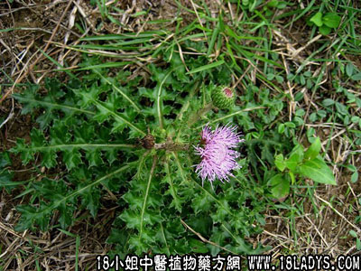

别名：山老鼠簕，大蓟。
植物名：大蓟。
生长环境：本品为多年生粗壮草本。多生于旷野或荒山地上，有时路旁亦见之。
分布：主产长江流域以南，广东各地都很普遍，唯广州近郊不常见。
如药部分：根。
采集期：春、夏。
自采地点：山岗。
性味：性凉，味苦。
功能：凉血、散瘀、止血。
主治、用量和用法：1、痰火咳，配伍用；2、小便刺痛、白浊：干根1至2两，清水煎服；3、跌打瘀肿，配伍用。
验方1：（治痰火核方）干山萝卜根5钱、风栗壳5钱、千层纸5钱、夏枯草5钱、清水三碗，煎成一碗服。
（方解）山萝卜凉血降火、风栗壳，千层纸泄热除痰，夏枯草行气散郁结，《本草纲目》曰：“夏枯草味辛而性寒毒，为治瘰疬鼠瘘之要药。”本方药性平稳，为降火除痰之剂。
（方歌）凉血降火山萝根，痰火换成肝热囱，栗壳夏枯千层纸，泄热捐痰法可珍。
验方2：（治跌打瘀肿方）：山萝卜5钱、鸡骨香5钱、千大锤5钱、入地金牛5钱、清水三碗，煎成一碗服，冲酒服。
（方解）山萝卜即《本草纲目》之大蓟，功能凉血散瘀，鸡骨香古名降真香，《本草纲目》论其功“有疗折伤金疮，止血定痛，消肿生肌之效。”，千大锤即台乌，温中行气，入地金牛祛风消肿，合为祛风行气消肿之剂，以之治疗跌打瘀肿有效。
（方歌）跌打瘀肿困伤，山萝卜与鸡骨香，金牛还加千大锤，瘀消痛止效彰彰。